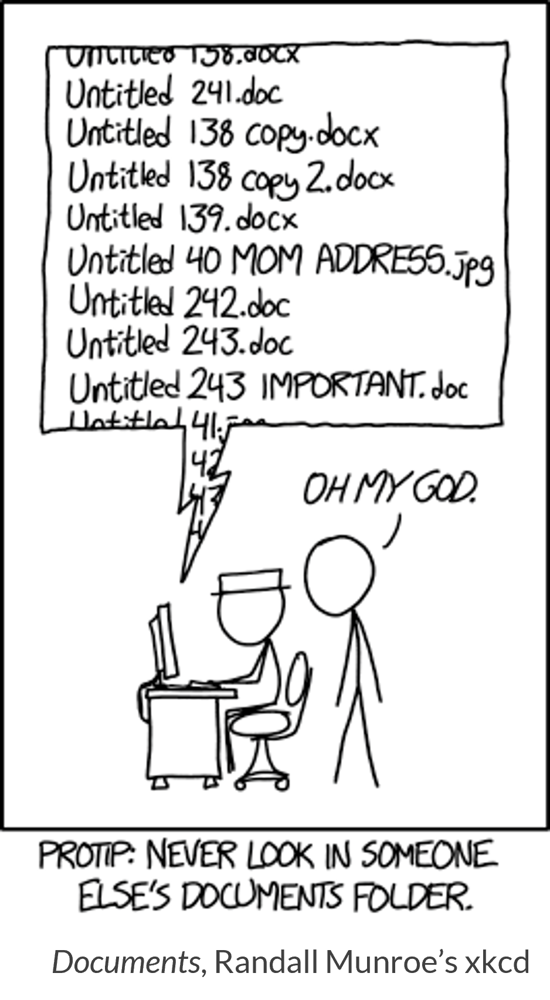

demo/spooky-folder
├── Data
│ ├── ghost-viz.R
│ ├── Pumpkin-Stats.CSV
│ ├── skeletonReport.doc
│ ├── skeletonReport.qmd
│ ├── vampireBATS.txt
│ └── WITCH_list.docx
├── images
│ └── witchCauldron.png
├── Misc Files
│ └── BlackCats.png
├── misc-files
├── R
│ ├── ghost data (final) v2.CSV
│ ├── haunted_house.xlsx
│ └── untitled 10 31.R
└── REPORTS
├── ghost data (final).CSV
└── ghost data.csvEfficient File Management in R with {fs}
Jadey Ryan // October 29, 2025
R-Ladies St. Louis
R-Ladies St. Louis
Jadey Ryan

Context setting

What’s wrong with this folder?
What’s wrong with this folder?
- Inconsistent capitalization
- Inconsistent use of delimiters (e.g., spaces, hyphens, underscores)
- File extensions don’t match their subfolder
- Difficult to know which is actually the final version
Woes of inconsistent, poorly named files
- Hard to find what you need when you need it
- Can break scripts and analysis pipelines
- Nightmare for collaborators and your future self
- Errors from using outdated versions
- Wastes time and energy
Meet {fs}
- File system operations (e.g., create, rename, move, delete)
- Works on multiple operating systems
- Inspired by Rust’s fs module
- {fs} pkgdown site

The basics
{fs} functions
- Consistent syntax with four main categories
path_for manipulating and constructing pathsfile_for filesdir_for directorieslink_for links
- {fs} function reference
{fs} vs base R
| {fs} | Base R |
|---|---|
| Vectorized (accept multiple paths as input) | Inconsistently vectorized |
| Predictable return values that convey a path | Sometimes are logical and sometimes have error codes |
Consistent verb function names (file_exist() and file_show()) |
Different naming conventions (e.g., file.exist() and browseURL()) |
| Throws an error if an operation fails | Sometimes will only generate a warning and OS dependent error code |
{fs} is more consistent and intuitive.
For more details, see Comparison of fs functions, base R, and shell commands article.
Get started
.
├── demo
│ ├── generate-spooky-folder.R
│ ├── other-scary-analysis
│ │ ├── data
│ │ ├── images
│ │ ├── output
│ │ ├── reports
│ │ └── src
│ ├── scary-analysis
│ │ ├── data
│ │ ├── images
│ │ ├── output
│ │ ├── reports
│ │ └── src
│ ├── spooky-folder
│ │ ├── Data
│ │ ├── images
│ │ ├── Misc Files
│ │ ├── misc-files
│ │ ├── R
│ │ └── REPORTS
│ └── spooky_folder
│ ├── data
│ ├── images
│ ├── misc_files
│ ├── R
│ └── reports
├── fs-rladies-sl.Rproj
├── images
│ ├── bulk-density.jpg
│ ├── documents-xkcd.png
│ ├── final-phd-comics.gif
│ ├── mts.jpg
│ ├── mts.webp
│ ├── rangeland.jpg
│ ├── soil-sampling.jpg
│ └── witchy-jr-cat-fs.png
├── README.md
├── slides.html
├── slides.qmd
├── slides.rmarkdown
├── slides.scss
├── slides_files
│ └── libs
│ ├── clipboard
│ ├── quarto-contrib
│ ├── quarto-html
│ └── revealjs
├── _extensions
│ └── quarto-ext
│ ├── fontawesome
│ └── pointer
└── _publish.ymlConstructing file paths
- Straight-forward concatenation with the right separator to work across operating systems!
- Windows: C:\Users\username\Documents\file.txt
- macOS: /Users/username/Documents/file.txt
Construct a path with the right separator
Check for existence
Check if spooky-cat.png exists
Create a path to an existing image
Create, move, copy, delete
| Action | Function | Use Case |
|---|---|---|
| Create* | file_create() |
Create a new file |
| Copy* | file_copy() |
Copy a file |
| Move | file_move() |
Move or rename a file |
| Delete* | file_delete() |
Delete a file |
*These also work with dir_ and link_ prefixes
Create
Create root directory
Set up sub-directories
Create results
Copy
Copy safely
Move
Create a new folder to move scripts into
Move results
Rename with move
file_move(path = "demo/other-scary-analysis/R",
new_path = "demo/other-scary-analysis/src")
dir_tree("demo/other-scary-analysis")demo/other-scary-analysis
├── data
│ ├── processed
│ └── raw
├── images
├── output
├── reports
└── src
├── 01-load-data.R
├── 02-wrangle-data.R
├── 03-model.R
└── 04-visualization.RDelete
Clean up a messy folder
Revisit our spooky folder
demo/spooky-folder/
├── Data
│ ├── ghost-viz.R
│ ├── Pumpkin-Stats.CSV
│ ├── skeletonReport.doc
│ ├── skeletonReport.qmd
│ ├── vampireBATS.txt
│ └── WITCH_list.docx
├── images
│ └── witchCauldron.png
├── Misc Files
│ └── BlackCats.png
├── misc-files
├── R
│ ├── ghost data (final) v2.CSV
│ ├── haunted_house.xlsx
│ └── untitled 10 31.R
└── REPORTS
├── ghost data (final).CSV
└── ghost data.csvNaming conventions

Artwork by Allison Horst
Meet {janitor}

Artwork by Allison Horst
{fs} meets {janitor}
Warning
You could just use {stringr} for cleaning, but {janitor} is more comprehensive. See the make_clean_names() docs.
Arguments that might come in handy: case, replace, parsing_option, abbreviations, sep_out.
Always check files before renaming!
Uh oh – the directory separators and extensions were lost!
demo/spooky-folder/Data
demo/spooky-folder/Data/ghost-viz.R
demo/spooky-folder/Data/Pumpkin-Stats.CSV
demo/spooky-folder/Data/skeletonReport.doc
demo/spooky-folder/Data/skeletonReport.qmd
demo/spooky-folder/Data/vampireBATS.txt
demo/spooky-folder/Data/WITCH_list.docx
demo/spooky-folder/images
demo/spooky-folder/images/witchCauldron.png
demo/spooky-folder/Misc Files
demo/spooky-folder/Misc Files/BlackCats.png
demo/spooky-folder/misc-files
demo/spooky-folder/R
demo/spooky-folder/R/ghost data (final) v2.CSV
demo/spooky-folder/R/haunted_house.xlsx
demo/spooky-folder/R/untitled 10 31.R
demo/spooky-folder/REPORTS
demo/spooky-folder/REPORTS/ghost data (final).CSV
demo/spooky-folder/REPORTS/ghost data.csv [1] "demo_spooky_folder_data"
[2] "demo_spooky_folder_data_ghost_viz_r"
[3] "demo_spooky_folder_data_pumpkin_stats_csv"
[4] "demo_spooky_folder_data_skeleton_report_doc"
[5] "demo_spooky_folder_data_skeleton_report_qmd"
[6] "demo_spooky_folder_data_vampire_bats_txt"
[7] "demo_spooky_folder_data_witch_list_docx"
[8] "demo_spooky_folder_images"
[9] "demo_spooky_folder_images_witch_cauldron_png"
[10] "demo_spooky_folder_misc_files"
[11] "demo_spooky_folder_misc_files_black_cats_png"
[12] "demo_spooky_folder_misc_files_2"
[13] "demo_spooky_folder_r"
[14] "demo_spooky_folder_r_ghost_data_final_v2_csv"
[15] "demo_spooky_folder_r_haunted_house_xlsx"
[16] "demo_spooky_folder_r_untitled_10_31_r"
[17] "demo_spooky_folder_reports"
[18] "demo_spooky_folder_reports_ghost_data_final_csv"
[19] "demo_spooky_folder_reports_ghost_data_csv" Split, clean, and reconstruct
Split directory, name, and extension
[[1]]
[1] "demo" "spooky-folder" "Data"
[[2]]
[1] "demo" "spooky-folder" "Data" "ghost-viz.R"
[[3]]
[1] "demo" "spooky-folder" "Data"
[4] "Pumpkin-Stats.CSV"Clean with {janitor}
Always check files before renaming!
Uh oh – the directory separators are maintained, but the extensions are still lost!
demo/spooky-folder/Data
demo/spooky-folder/Data/ghost-viz.R
demo/spooky-folder/Data/Pumpkin-Stats.CSV
demo/spooky-folder/Data/skeletonReport.doc
demo/spooky-folder/Data/skeletonReport.qmd
demo/spooky-folder/Data/vampireBATS.txt
demo/spooky-folder/Data/WITCH_list.docx
demo/spooky-folder/images
demo/spooky-folder/images/witchCauldron.png
demo/spooky-folder/Misc Files
demo/spooky-folder/Misc Files/BlackCats.png
demo/spooky-folder/misc-files
demo/spooky-folder/R
demo/spooky-folder/R/ghost data (final) v2.CSV
demo/spooky-folder/R/haunted_house.xlsx
demo/spooky-folder/R/untitled 10 31.R
demo/spooky-folder/REPORTS
demo/spooky-folder/REPORTS/ghost data (final).CSV
demo/spooky-folder/REPORTS/ghost data.csvdemo/spooky_folder/data
demo/spooky_folder/data/ghost_viz_r
demo/spooky_folder/data/pumpkin_stats_csv
demo/spooky_folder/data/skeleton_report_doc
demo/spooky_folder/data/skeleton_report_qmd
demo/spooky_folder/data/vampire_bats_txt
demo/spooky_folder/data/witch_list_docx
demo/spooky_folder/images
demo/spooky_folder/images/witch_cauldron_png
demo/spooky_folder/misc_files
demo/spooky_folder/misc_files/black_cats_png
demo/spooky_folder/misc_files
demo/spooky_folder/r
demo/spooky_folder/r/ghost_data_final_v2_csv
demo/spooky_folder/r/haunted_house_xlsx
demo/spooky_folder/r/untitled_10_31_r
demo/spooky_folder/reports
demo/spooky_folder/reports/ghost_data_final_csv
demo/spooky_folder/reports/ghost_data_csv{fs} meets {stringr}
paths_almost_clean <- paths_clean
# Get extensions
exts <- path_ext(paths) |>
# Remove blanks
stringr::str_subset("\\S") |>
# Remove duplicates
stringr::str_unique() |>
# Make lowercase
stringr::str_to_lower()
# Make dynamic regex pattern including extensions
pattern <- paste0("_(?=(", paste(exts, collapse = "|"), ")$)")
# Replace underscore before ext with period
paths_clean <- stringr::str_replace(paths_almost_clean, pattern, ".") |>
# Make fs_path again
path()Always check files before renaming!
Yay! Let’s just fix the R folder and extensions.
demo/spooky_folder/data
demo/spooky_folder/data/ghost_viz_r
demo/spooky_folder/data/pumpkin_stats_csv
demo/spooky_folder/data/skeleton_report_doc
demo/spooky_folder/data/skeleton_report_qmd
demo/spooky_folder/data/vampire_bats_txt
demo/spooky_folder/data/witch_list_docx
demo/spooky_folder/images
demo/spooky_folder/images/witch_cauldron_png
demo/spooky_folder/misc_files
demo/spooky_folder/misc_files/black_cats_png
demo/spooky_folder/misc_files
demo/spooky_folder/r
demo/spooky_folder/r/ghost_data_final_v2_csv
demo/spooky_folder/r/haunted_house_xlsx
demo/spooky_folder/r/untitled_10_31_r
demo/spooky_folder/reports
demo/spooky_folder/reports/ghost_data_final_csv
demo/spooky_folder/reports/ghost_data_csvdemo/spooky_folder/data
demo/spooky_folder/data/ghost_viz.r
demo/spooky_folder/data/pumpkin_stats.csv
demo/spooky_folder/data/skeleton_report.doc
demo/spooky_folder/data/skeleton_report.qmd
demo/spooky_folder/data/vampire_bats.txt
demo/spooky_folder/data/witch_list.docx
demo/spooky_folder/images
demo/spooky_folder/images/witch_cauldron.png
demo/spooky_folder/misc_files
demo/spooky_folder/misc_files/black_cats.png
demo/spooky_folder/misc_files
demo/spooky_folder/r
demo/spooky_folder/r/ghost_data_final_v2.csv
demo/spooky_folder/r/haunted_house.xlsx
demo/spooky_folder/r/untitled_10_31.r
demo/spooky_folder/reports
demo/spooky_folder/reports/ghost_data_final.csv
demo/spooky_folder/reports/ghost_data.csvMake R uppercase again
paths_clean <- paths_clean |>
# Capitalize R folder name
stringr::str_replace("/r(?=/|$)", "/R") |>
# Capitalize R extension
stringr::str_replace("\\.r", ".R")
# Show the updated files containing R
paths_clean |>
stringr::str_subset("R")[1] "demo/spooky_folder/data/ghost_viz.R"
[2] "demo/spooky_folder/R"
[3] "demo/spooky_folder/R/ghost_data_final_v2.csv"
[4] "demo/spooky_folder/R/haunted_house.xlsx"
[5] "demo/spooky_folder/R/untitled_10_31.R" Complete the renaming
But wait… our new folders don’t exist yet!
Error: Arguments must have consistent lengths, only values of length one are recycled.Warning
{fs} gotcha! file_move() and file_copy() don’t automatically create parent folders!
Create parent folders first
Get the parent folders
[1] "demo/spooky_folder" "demo/spooky_folder/data"
[3] "demo/spooky_folder/images" "demo/spooky_folder/misc_files"
[5] "demo/spooky_folder/R" "demo/spooky_folder/reports" Complete the renaming
Filter out folders
See our pretty, cleaned folder
demo/spooky_folder
├── data
│ ├── ghost_data.csv
│ ├── ghost_data_final.csv
│ ├── ghost_data_final_v2.csv
│ ├── ghost_viz.R
│ ├── haunted_house.xlsx
│ ├── pumpkin_stats.csv
│ ├── skeleton_report.doc
│ ├── skeleton_report.qmd
│ ├── vampire_bats.txt
│ └── witch_list.docx
├── images
│ ├── black_cats.png
│ └── witch_cauldron.png
├── misc_files
│ ├── black_cats.png
│ └── vampire_bats.txt
├── R
│ ├── ghost_data_final_v2.csv
│ ├── ghost_viz.R
│ ├── haunted_house.xlsx
│ └── untitled_10_31.R
└── reports
├── ghost_data.csv
├── ghost_data_final.csv
├── skeleton_report.doc
├── skeleton_report.qmd
└── witch_list.docxWait… we’re not done yet!
We have nice, consistent names… but the organization is still very wrong!
Use globs to get files based on extension
data <- dir_ls("demo/spooky_folder", recurse = TRUE, glob = "*.csv|*.xlsx")
images <- dir_ls("demo/spooky_folder", recurse = TRUE, glob = "*.png")
misc_files <- dir_ls("demo/spooky_folder", recurse = TRUE, glob = "*.txt")
r <- dir_ls("demo/spooky_folder", recurse = TRUE, glob = "*.R")
reports <- dir_ls("demo/spooky_folder", recurse = TRUE, glob = "*.doc|*.docx|*.qmd")What we started with
demo/spooky-folder
├── Data
│ ├── ghost-viz.R
│ ├── Pumpkin-Stats.CSV
│ ├── skeletonReport.doc
│ ├── skeletonReport.qmd
│ ├── vampireBATS.txt
│ └── WITCH_list.docx
├── images
│ └── witchCauldron.png
├── Misc Files
│ └── BlackCats.png
├── misc-files
├── R
│ ├── ghost data (final) v2.CSV
│ ├── haunted_house.xlsx
│ └── untitled 10 31.R
└── REPORTS
├── ghost data (final).CSV
└── ghost data.csvOur cleaned folder
demo/spooky_folder
├── data
│ ├── ghost_data.csv
│ ├── ghost_data_final.csv
│ ├── ghost_data_final_v2.csv
│ ├── haunted_house.xlsx
│ └── pumpkin_stats.csv
├── images
│ ├── black_cats.png
│ └── witch_cauldron.png
├── misc_files
│ └── vampire_bats.txt
├── R
│ ├── ghost_viz.R
│ └── untitled_10_31.R
└── reports
├── skeleton_report.doc
├── skeleton_report.qmd
└── witch_list.docxCleaning steps
- Review folder with
dir_tree()to inspect structure and naming inconsistencies - Plan new conventions (e.g., snake_case)
- Generate new names with {janitor} and/or {stringr}
- ⚠️Review first before renaming!⚠️
- Create new parent folders with
dir_create() - Filter out folders from old and new path vectors
- Move files with
file_move() - Review again with
dir_tree() - Final manual edits (e.g., “untitled_10_31.R”)
Use functions to repeat this process
Clean paths function
clean_paths <- function(folder, recurse = TRUE) {
# Split paths into parts
paths <- dir_ls(folder, recurse = recurse)
parts <- path_split(paths)
# Clean to snake_case
parts_clean <- purrr::map(
parts,
\(part) janitor::make_clean_names(part, case = "snake")
)
# Reconstruct paths
paths_clean <- path_join(parts_clean)
# Get extensions
exts <- path_ext(paths) |>
# Remove blanks
stringr::str_subset("\\S") |>
# Remove duplicates
stringr::str_unique() |>
# Make lowercase
stringr::str_to_lower()
# Make dynamic regex pattern including extensions
pattern <- paste0("_(?=(", paste(exts, collapse = "|"), ")$)")
# Replace underscore before ext with period and make R uppercase
paths_clean <- paths_clean |>
stringr::str_replace(pattern, ".") |>
# Capitalize R folder name
stringr::str_replace("/r(?=/|$)", "/R") |>
# Capitalize R extension
stringr::str_replace("\\.r", ".R") |>
# Make fs_path again
path()
return(paths_clean)
}clean_paths() results
demo/spooky-folder
├── Data
│ ├── ghost-viz.R
│ ├── Pumpkin-Stats.CSV
│ ├── skeletonReport.doc
│ ├── skeletonReport.qmd
│ ├── vampireBATS.txt
│ └── WITCH_list.docx
├── images
│ └── witchCauldron.png
├── Misc Files
│ └── BlackCats.png
├── misc-files
├── R
│ ├── ghost data (final) v2.CSV
│ ├── haunted_house.xlsx
│ └── untitled 10 31.R
└── REPORTS
├── ghost data (final).CSV
└── ghost data.csvRename files function
rename_files <- function(old_paths, new_paths) {
# Get parent folders
parents <- unique(path_dir(new_paths))
# Create parent folders
dir_create(parents)
# Filter out folders from files
old_paths <- subset(old_paths, !is_dir(old_paths))
new_paths <- subset(new_paths, !is_dir(new_paths))
# Rename files
file_move(old_paths, new_paths)
# See results
dir_tree(path_common(new_paths))
}rename_files() results
demo/spooky_folder
├── data
│ ├── ghost_data.csv
│ ├── ghost_data_final.csv
│ ├── ghost_data_final_v2.csv
│ ├── ghost_viz.R
│ ├── haunted_house.xlsx
│ ├── pumpkin_stats.csv
│ ├── skeleton_report.doc
│ ├── skeleton_report.qmd
│ ├── vampire_bats.txt
│ └── witch_list.docx
├── images
│ ├── black_cats.png
│ └── witch_cauldron.png
├── misc_files
│ ├── black_cats.png
│ └── vampire_bats.txt
├── R
│ ├── ghost_data_final_v2.csv
│ ├── ghost_viz.R
│ ├── haunted_house.xlsx
│ └── untitled_10_31.R
└── reports
├── ghost_data.csv
├── ghost_data_final.csv
├── skeleton_report.doc
├── skeleton_report.qmd
└── witch_list.docxOrganize files function
organize_files <- function(folder) {
# List subdirectories and extensions
data <- dir_ls(folder, recurse = TRUE, glob = "*.csv|*.xlsx")
images <- dir_ls(folder, recurse = TRUE, glob = "*.png")
misc_files <- dir_ls(folder, recurse = TRUE, glob = "*.txt")
r <- dir_ls(folder, recurse = TRUE, glob = "*.R")
reports <- dir_ls(folder, recurse = TRUE, glob = "*.doc|*.docx|*.qmd")
# Move files
file_move(data, path(stringr::str_glue("{folder}/data")))
file_move(images, path(stringr::str_glue("{folder}/images")))
file_move(misc_files, path(stringr::str_glue("{folder}/misc_files")))
file_move(r, path(stringr::str_glue("{folder}/R")))
file_move(reports, path(stringr::str_glue("{folder}/reports")))
# See results
dir_tree(folder)
}organize_files() results
demo/spooky_folder
├── data
│ ├── ghost_data.csv
│ ├── ghost_data_final.csv
│ ├── ghost_data_final_v2.csv
│ ├── haunted_house.xlsx
│ └── pumpkin_stats.csv
├── images
│ ├── black_cats.png
│ └── witch_cauldron.png
├── misc_files
│ └── vampire_bats.txt
├── R
│ ├── ghost_viz.R
│ └── untitled_10_31.R
└── reports
├── skeleton_report.doc
├── skeleton_report.qmd
└── witch_list.docxFull cleaning function workflow
# Start fresh
source("demo/generate-spooky-folder.R")
paths <- dir_ls("demo/spooky-folder", recurse = TRUE)
# Run function
paths_clean <- clean_paths("demo/spooky-folder")
paths_clean
# Review paths_clean before running the next functions!
rename_files(paths, paths_clean)
organize_files("demo/spooky_folder")Query folder and file information
Resources
- Guest blog post & accompanying video tutorial for R for the Rest of Us Automate file management in R with the {fs} package
- Danielle Navarro’s For fs blog post
- Jenny Bryan’s How to Name Files Like a Normie slides
Thank you!
🏡 Home for slides:
jadeyryan.quarto.pub/fs-rladies-sl/
👩🏻💻 Source code:
github.com/jadeynryan/fs-rladies-sl
🎥 Recordings from previous workshops & talks:
links in GitHub repo or my YouTube playlist